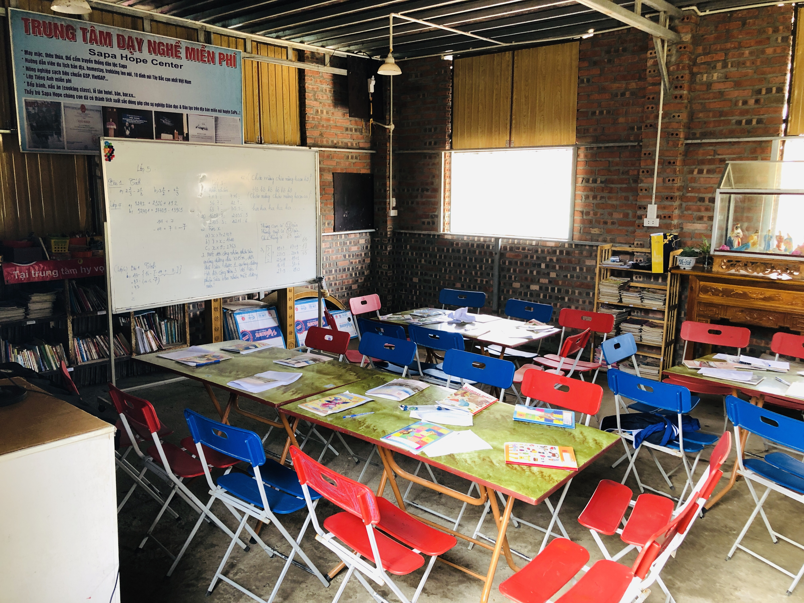
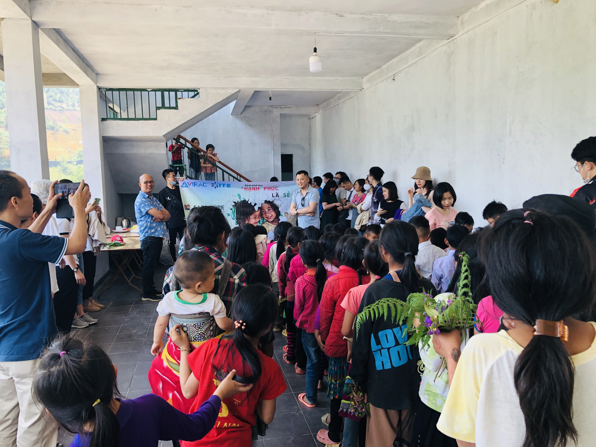
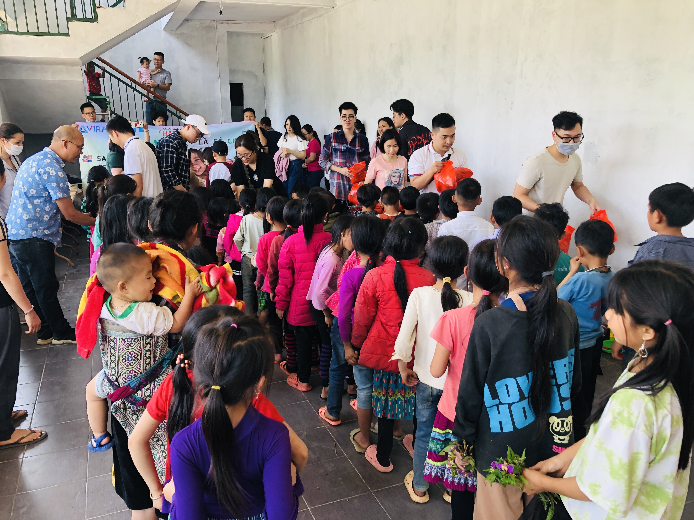
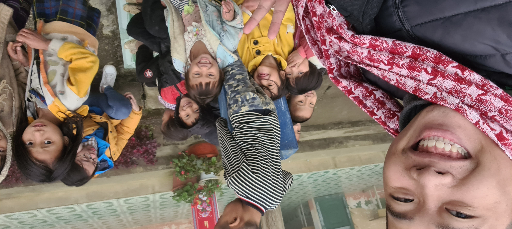
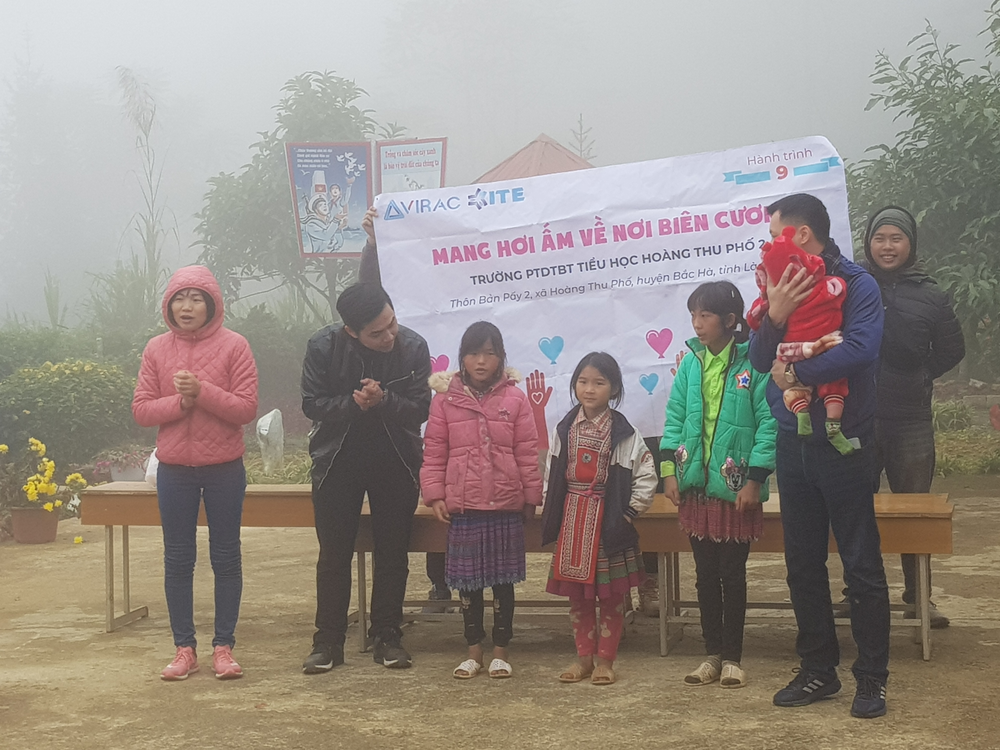

ITE Technology Solution Joint Stock Company (formally known as ITE Education Technology Joint Stock Company) was founded in 2017, based on the creation of intelligent educational software for schools in Hanoi and Ho Chi Minh City. Our products had been used in several schools across Hanoi and Ho Chi Minh City.
From 2019, ITE Technology Solution Joint Stock Company has taken a new field in e-commerce. Having a team of experts and experienced technicians, we specialize in consulting solutions to build the process of applying Information Technology into business management, e-payment platform (payment gateway, billing gateway, e-wallet,...) and other related softwares.
We always do our best to bring the most modern and optimal solutions, simplify customer's demands with our creativity and our passion.

Mission: We carry on the mission and responsibility to provide solutions, products, services, smart products for society in areas such as e-commerce, management, technology application and transfer ... that contribute to the industrialization and modernization of the country in the context of world economic integration.
Vision: Aspiration to become a leading company in providing solutions, products, services and sustainable development in the information technology field, especially in e-commerce.
Core value:
- For External: Offering solutions to customers with innovation and diversity
- For Internal (Staff):
+ Listening, equality and flexibility at work
+ Great environment for learning and personal development
Receiving constant support from the community after the volunteer trip to Hoang Thu Pho commune, this April, ITE staff had visited a small school in Ta Phin village, Sapa town, which carries and takes care of many of the destitute lives of the "fog city".
ITE's volunteer trip #9 has ended satisfactorily, leaving each member with unforgettable feelings
In parallel with completing projects at work, ITE always focuses on providing a healthy environment for staff. Besides charity activities which are held twice a year, we also organize other activities in which football is the most favoured.
Receiving constant support from the community after the volunteer trip to Hoang Thu Pho commune, this April, ITE staff had visited a small school in Ta Phin village, Sapa town, which carries and takes care of many of the destitute lives of the "fog city".
 Mountain view around SAPA HOPE CENTER
Mountain view around SAPA HOPE CENTER
SAPA HOPE CENTER AND HOMESTAY is a volunteer project founded by philanthropist Peter Thuong, providing free accommodation and English learning opportunities for disadvantaged children living in Sapa. After two campus changes, SAPA HOPE CENTER chose to stick with the Ta Phin land, with the hope of giving the children here the opportunity to study and grow the same as many children across the country.
 Small but cozy classroom area of students
Besides teaching, the center also organizes homestay services for visitors and tourists visiting the city, with the proceeds will be used to provide food for the children and finish facilities. However, the Covid wave that took place continuously for two years 2019 and 2020 made the fund mobilization of the center difficult, the school has not been built completely and there is a lack of living equipments, rooms stay for the students.
 ITE staff and children at the center
In order to motivate their academic energies as well as convey their sincere hearts, ITE had mobilized employees, partners and philanthropists to contribute to help children on the border of the country. On April 24, 2021, we successfully organized a charity trip to SAPA HOPE CENTER. Here, the staff of the company gave gifts to support the center which are essential items in daily life such as water purifiers, rice, spices, pans, ... and small gift bags including candies and milk to students. Seeing the bright faces of the children, we have more confidence in the future preschools of the country. The trip finished with hugs, handshakes and wild flower bouquets from the center's children and teachers.
 Staff give gifts to children
ITE's volunteer trip #9 has ended satisfactorily, leaving each member with unforgettable feelings.
The convoy began to depart early in the morning, loaded with decent gifts including clothes and books for the children. Over a dozen kilometers of mountain roads, appearing right under our noses is the wild and misty Hoang Thu Pho commune, the cold weather makes the scene more barren than ever. The convoy continues to go deep into Hoang Thu Pho 2 Primary School, which is on a dirt road with a steep and winding slope, this is also the usual path to school for the students here.
 Pupils at Hoang Thu Pho 2 school
Pupils at Hoang Thu Pho 2 school
Visiting the children, we could not help but be moved when witnessing stunted bodies glimmering in the cut-off cold, many of them only wore thin shirts, blotchy faces but still smiling to welcome us. Most of the families here are in a difficult situation, but life cannot take away their innocent smiles and precious study efforts.
 Mr. Nguyen Binh Trong (Backend Developer) and Ms. Pham Thi Thanh Huyen (Business Analyst) have fun with the children
On December 5, 222 gifts (including blankets, pillows, clothes, books, toothpaste, school supplies, ...) were sent by ITE to the pupils of Hoang Thu primary school 2. This is the 9th time we have volunteered, the members are extremely happy to hand out gifts to the children, though not too complete, but hope to partly help support their lives and encourage their studious spirit.

Mr. Vu Duc Minh Hieu (CEO), Ms. Tran Van Ly (COO) and Mr.
Nguyen Ngoc Son (Teamlead Digital Marketing)
organized a game with the students
ITE staff with children and teachers
In parallel with completing projects at work, ITE always focuses on providing a healthy environment for staff. Besides charity activities which are held twice a year, we also organize other activities in which football is the most favoured.
Sports activities have created a close bond between employees in the company. This sport is held 1 session per week, after work, it not only helps to exercise and relax after a long working day, but it is also an opportunity for brothers in the company to interact with each other.
In addition, on special days like the founding day of the company, National Day, ... ITE also organizes a Marathon for all employees to participate. These activities have shown the concern for both mental and physical life of all employees in the company. At the same time, it has created a new playground, healthy entertainment, physical training to create a joyful atmosphere throughout the Company, helping people to regenerate their labor force and creating a close relationship among everyone.